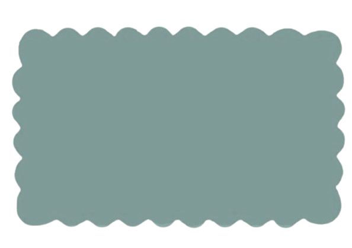

Welcome to your safe space, Nurse!
We are so glad you're here. This is a place made just for you; the heart of healthcare.
This is a place made just for you — the heart of healthcare. Whether you're looking to unwind, recharge, or find support, you deserve a space that cares for you the way you care for others.
Here, you’ll find gentle tips, uplifting support, and wellness resources to help you nourish your body, mind, and spirit. Take a deep breath, grab a cup of tea, and explore — you’ve earned it.
You’re not alone. You matter. And your well-being comes first here.🤍